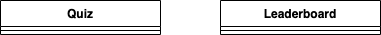
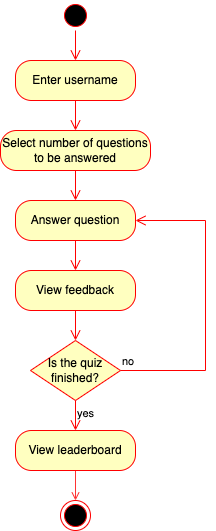
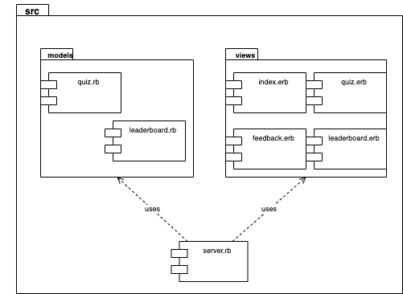
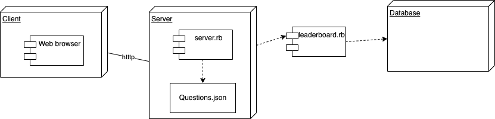
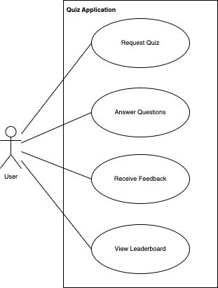

Quiz Application with Microservices¶ ↑
This documentation was developed as part of a programming project for the Software Design and Architecture course (Tc3049), at the Tecnológico de Monterrey, Campus Estado de México.
Author¶ ↑
| Author |
Javier Alexandro Vargas Sánchez A01377718 |
| Date |
June 10, 2021 |
General overview¶ ↑
This project creates a quiz application that runs serverless with a microservices based architecture. The application will put to the test the knowledge of our user regarding design patterns and refactorings, the two main topics covered during the Software Design and Architecture course.
The application contains 50 questions about design patterns and refactorings, aswell as bonus questions about Ruby, the main programing language used for this course.
Cloud9, AWS Lambda and DynamoDB were used for the creation of this project.
The directory structure for the application and its documentation is as follows:
microservices/
├─ doc/ Folder produced by RDoc.
├─ img/ Folder for the documentation’s image files.
└─ src/ Folder for the application’s source code.
├─ public/ Folder for the server’s public documents.
│ └─ stylesheets/ Folder for the application’s CSS files.
├─ models/ Folder for the application’s models.
└─ views/ Folder for the application’s views (ERB files).
How to install and run the application and all the microservices¶ ↑
To run this application it is necessary to install the following gems, at the terminal type the following commands:
$ gem install faraday $ gem install sinatra
To run the program locally, inside the src folder type the following instruction at the command line:
ruby -I . -w server.rb
The 4 + 1 Architectural View Model¶ ↑
For the quiz application documentation, the 4 + 1 view model will be used. This view model was created by Philippe Kruchten and describes a software application from 5 different standpoints.
Logical View¶ ↑
The logical view contains information about the various parts of the system. In this case it is only comprised from our 2 lambda functions:

Process view¶ ↑
The process view focuses on the runtime behavior of the system. The process view for this project is as follows:

Development view¶ ↑
The development view focuses on software modules and subsystems. This project has the following packages and modules:

Physical view¶ ↑
The physical view describes the physical deployment of the system, revealing which pieces of software run on what pieces of hardware.

Scenarios (Use case view)¶ ↑
This view describes the functionality of the system from the perspective from outside world. It contains diagrams describing what the system is supposed to do from a black box perspective.

Patterns Used¶ ↑
This project was created using the following design patterns:
-
Domain-Specific Language: The
server.rbfile consists of a series of Sinatra routes. Sinatra is a DSL for creating web applications in Ruby, it provides an easy way to create the navigation through the use of GET and POST methods -
Model-View-Controller: The quiz application project follows the classical web implementation of the MVC architectural pattern. The models (
.rbfiles) and views (.erbfiles) are stored in the correspondingmodelsandviewsdirectory. The controller is contained inserver.rbfile
Acknowledgements¶ ↑
I could not have completed this project without the help of my girlfriend, Fer Landa. Her continuous support and her enormous sacrifice helping me collecting questions will not be forgotten and will be forever appreciated. Thank you for always standing by my side, I love you.
I would also want to thank my teacher Ariel Ortiz, thank you for being so supportive, communicative and overall a patient and helpful teacher, I will cherish the memories of watching The IT Crowd on Fridays. I would have liked to finish the functionality of this project however my time ran out, and so did my sanity, a man can only pull so many all-nighters.
References¶ ↑
-
M. Fowler. UML Distilled: A Brief Guide to the Standard
ObjectModeling Language, 3rd Edition. Addison-Wesley, 2003. -
E. Gamma, R. Helm, R. Johnson, J. M. Vlissides. Design Patterns: Elements of Reusable Object-Oriented Software. Addison-Wesley, 1994.
-
A. Harris, K. Haase. Sinatra: Up and Running. O’Reilly, 2011.
-
Ph. Kruchten. The 4+1 View Model of Architecture. IEEE Software, vol. 12 (6), pp. 45-50, 1995. http://www.ics.uci.edu/~andre/ics223w2006/kruchten3.pdf
-
R. Olsen. Design Patterns in Ruby. Addison-Wesley, 2007.
-
Ruby-Doc.org. RDoc Markup Reference. http://ruby-doc.org/stdlib-2.4.1/libdoc/rdoc/rdoc/RDoc/Markup.html.
-
SourceMaking. Design Patternhttps://sourcemaking.com/design_patterns. Accessed June 4, 2022.